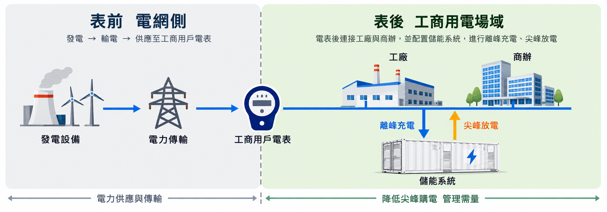
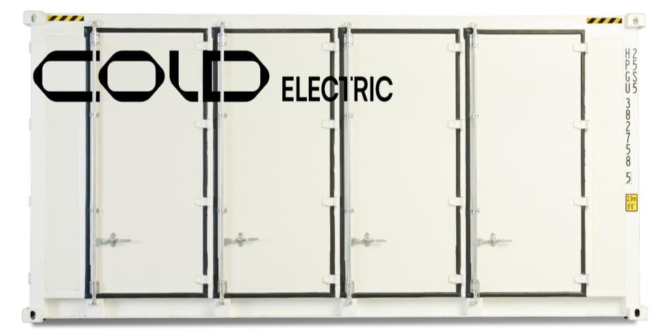

離峰充電
從低價時段購電，透過PCS轉換後存入電池。
工商表後儲能業務提案 / 01
建請授權電池材料開發部主導長庚合作與案場開發，整合客戶關係、國產設備及專業工程資源。
首年同時推動目標
單案開發規模
符合條件並經核定之補助
背景照片：長庚V7 PDF第37頁／彰化2 MW、5.8 MWh
照片支持設備與場景觀察，效益與驗收仍須查核。
政策與商機 / 02
用電大戶門檻為5,000 kW；本案依使用者確認採工廠契約容量10 MW，未計10%義務的扣減優惠。
1,000 kW × 2小時
2025年1月歷史資料，非企業家數
| 途徑 | 政策例數量 | 成本參考 | 決策條件 |
|---|---|---|---|
| 自建再生能源 | 1,000 kW | 依場地、發電條件報價 | 可自發自用；須有空間與發電條件 |
| 建置表後儲能 | 1 MW / 2 MWh | 約3,096萬元；補助後約2,096萬元 | 節費＋設備資產；補助與義務認定分開申請 |
| 綠電＋憑證 | 太陽光電基準125萬度／年 | 4.8元時毛支出600萬元／年 | 4.8元為綠電＋憑證採購價假設，須扣市電 |
| 繳納代金 | 1,000 × 2,500 × 4 | 1,000萬元／年 | 未如期履行後機制；無電力、無設備 |
儲能優先評估對象尖峰負載高、場址符合補助、負載可移轉且有政策履行需求的工廠。不能假定每一客戶都以儲能最省。
太陽能仍是政策途徑現行辦法保留自建再生能源。綠電漲價是情境風險，並非已證實必然走勢。
來源：用電大戶辦法、能源署2025年履行資料；成本與售價來源見第12頁。
系統位置與運作 / 03
支援工廠與商辦的用電管理，離峰充入、尖峰供電。

從低價時段購電，透過PCS轉換後存入電池。
由電池支援廠內負載，減少高價時段購電。
依負載與費率調度，配合需量限制與運轉紀錄。
儲能不會自行產生綠電。停電備援須另有切換、孤島運轉及關鍵負載設計。
投資門檻 / 04
政府2025年2月500 kW / 1 MWh整案基準1,548萬元，線性外推至2 MWh，含系統與土建。非長庚實際報價。
01 場址資格符合指定工業區及園區的公司、工廠登記與用地條件。
02 容量與金額單一年度同一對象1–10 MWh；總補助低於實際設置費50%。
03 設備及時序核准後購置；國產電芯；指定聯網零組件非陸製、非陸牌。
04 量測與運轉智慧電表，夜尖峰執行率、使用率各80%以上；按規定期間履行。
05 排除費用土建、機電工程與饋線不列補助；申請項目不可重複政府補助。
查閱補助要點 ↗十五年累積成本情境 / 05
工廠契約容量10 MW → 10%義務1 MW → 2 MWh儲能。4.8元為綠電與憑證合計採購價；比較須扣被替代市電。
兩途徑具有相同政策履行目的；儲能須取得義務認定。太陽光電基準1,250度／kW年，10MW案例125萬度／年。首年價差每MWh99.914萬元、運維保險占建置費1%、價差效益年衰減2%、第11年換修20%建置費。後續效益不因換修自動恢復，以上為假設。
| 年末 | 綠電元／度 | 綠電累積淨增加（萬） | 儲能累積淨增加（萬） | 儲能相對優勢（萬） |
|---|
綠電增加成本＝量×（綠電合計價−市電替代成本）。儲能增加成本＝補助後投入＋運維與換修−價差節費；若不取消政策採購則加計綠電增加成本。首個交叉為年末累積比較，不是精確收益承諾。
交流往返效率90%、每MWh每循環交流供電900度、年250次（夏月105、非夏月145）。夏月9.39／2.53元，非夏月5.47／2.32元，價差固定；市電替代成本3.5元與漲幅為情境。未計稅、融資、輔助用電、殘值及折現。
4.8元經使用者確認為電力與憑證合計價，非市場驗證。儲能容量超出1–10 MWh時不自動套用補助；零漲幅或不同負載可能延後交叉，RE100綠電需求不能取消。
供應商與合作 / 06

V7揭露臺灣建置完成及建置中合計「超過」上述規模，包含不同儲能應用。非已驗收單一用途總量，也不代表已證實臺灣排名第一。
在地電芯與整合供應商宣稱臺製電芯、模組、BMS、EMS與系統能力，須取得關鍵製程與零組件文件。
服務可契約化EPC、維運代操、融資協助與保固；10年及72小時服務陳述須釐清保固條件與修復時限。
合作補足開發量能由本部承接案源、方案企劃、客戶協調。代理權、客戶歸屬與收益須簽約。
| 型號 | 電池裝置容量 | 電池側運行容量 | PCS | 共同參考規格 |
|---|---|---|---|---|
| C2100 | 2.104 MWh | 1.800 MWh | 選配 | 20呎級／LFP／IP55／氣冷 簡報標示6,000循環，條件須查驗 |
| C2900 | 2.900 MWh | 2.500 MWh | 選配 | |
| C1400 | 1.403 MWh | 1.200 MWh | 1,000 kW |
長庚V7 PDF第25、28、62–63頁。兩櫃C2900名目5.8 MWh、電池側運行5.0 MWh；交流供電另扣轉換及輔助耗能。
設備與應用場景佐證 / 07
下列為長庚原簡報揭露之實績與照片。點擊可放大；容量、案名依供應商陳述。
已驗收案場清單、同型號測試、現場參訪、運轉紀錄、容量維持率及實測節費。照片不能單獨證明投資回收、安全保證或市場排名。
安全與交付 / 08
以測試、監測、隔離、消防設計與維運降低風險，不能承諾零事故。
同型號測試、BMS溫度電壓監測、異常切離、溫控與分艙間距。
氣體煙溫偵測、聯動停機、通風防爆排氣、救災與復燃監控。
保護協調、熔絲斷路器、接地絕緣；耐震、洪水、防撞與鹽害評估。
EMS權限、連線保護、交流效益量測；維運保險與補助運轉紀錄。
UL 9540A為延燒及氣體危害測試方法，不代表免消防。適用VPC、電機及消防簽證由專業團隊逐案判定；並非宣稱長庚所有功能皆為標配。
部門主責的理由 / 09
現有客戶關係可直接啟動需求訪談，核對履行方式、尖峰負載與場址資格。
電子、金屬、塑化、食品等，依實際負載曲線評估，並非一律有利。
冷鏈、資料中心與公共防災案，另核備援設計、預算與招標資格。
需求訪談 · 初版方案 · 商務與專案協調
既有客戶、人脈及10月19日有經驗同仁加入為內部提供規劃；合作協議仍須取得。
12個月發展路徑 / 10
首年以完成初評、客戶提案及進入實質協商為「推動」標準。簽約及完工另列管理指標。
合作條件、長庚訓練、提案工具及首案勘查。
15個潛在案源目標完成收益與技術審查，推進首案商務協商或簽約。
1案示範提案依客戶決策與補助審查，分批設計及安排工程。
25–50MWh開發容量方案商收入方案規劃、設備與工程整合、專案管理及維運。費用與收益由合約確立。
管理指標有效案源、實測節費、可用容量、毛利、回款及補助運轉要求。客戶補助不列本部營收。
提請總經理核准 / 11
電池材料開發部主導儲能開發，協調業務、財務、法務與工程合作資源。
洽談代理及收益、安排訓練、啟動既有客戶勘查；技師與勘查費報價後另提預算。
追蹤五案進度、毛利與回款；首案通過技術、補助及財務審查後，再核准正式投入。
由材料專業延伸到儲能方案，讓既有客戶關係成為可交付的服務。
來源與資料邊界 / 12
網頁整理：2026年10月8日。法規本次核對；歷史價格與成本標示原時間，正式案場須更新。
照片由使用者提供長庚V7 PDF擷取，圖片版權歸原權利人；詳見照片來源清單。未刊載整份原始PDF。
重繪圖工商表後儲能圖參照PDF第4頁製作，為概念示意，不是實際工程圖或實測照片。
內部規劃客戶、人脈、人員加入、五案目標為提案資訊，不是已簽約成果。
試算六年回收須政策認定、核定補助與可取消採購情境成立；不能以照片或產品規格保證收益。